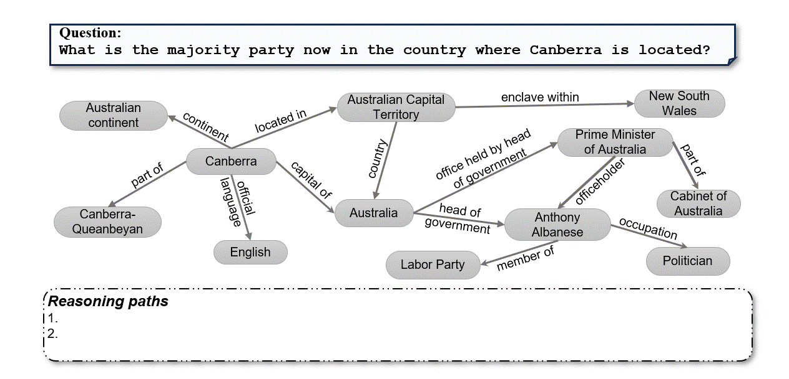
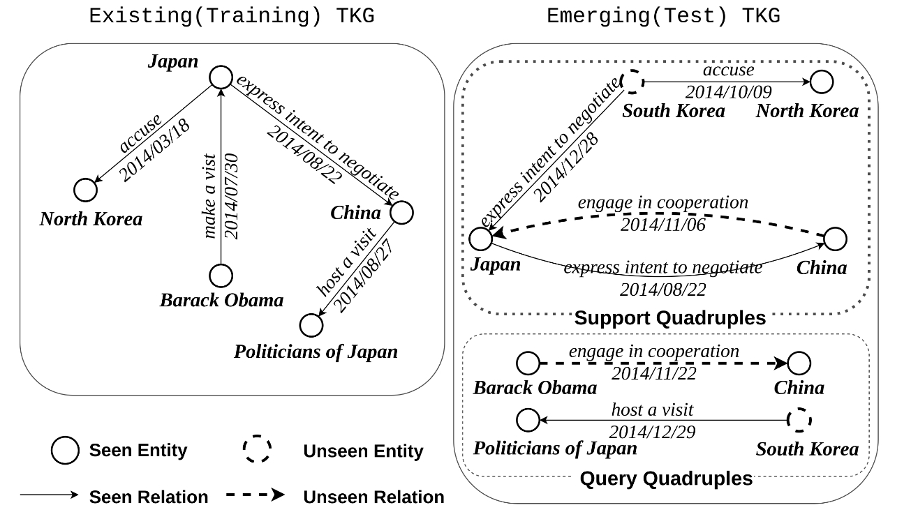

I am currently an AI research scientist at the Center of AI Finance and Deep Learning, International Digital Economy Academy (IDEA), Shenzhen. I obtained my Ph.D. degree from the Department of Computer Science at University of Bonn in January 2023, advised by Prof. Jens Lehmann. Previously, I obtained my Master and Bachelor degree from Zhejiang University.
My research interests involve large language model (LLM) and knowledge graph (KG), including but not limited to LLM reasoning, LLM agents, multi-modal LLM, knowledge-driven LLMs, KG representation learning, KG reasoning, and KG alignment.
I'm looking for self-motivated interns at IDEA (Shenzhen). If you are interested in the above topics, please send me your resume by email.

LLMs have become indispensable in the field of natural language processing, excelling in various reasoning tasks such as text generation and understanding. Despite their remarkable performance, these models encounter challenges related to explainability, safety, hallucination, out-of-date knowledge, and deep reasoning capabilities, particularly when dealing with knowledge-intensive tasks.
Our research aims to delves into the potential of knowledge-driven LLM reasoning as a promising approach to
address these limitations. More specifically, knowledge-driven LLM reasoning leverages LLMs to interact with the external enviroment (consisting of a variety of knowledge sources, e.g., KGs, textual corpus, databases, code repositories) and retrieve necessary knowledge to enhance the understanding and generation
capabilities of LLMs, providing them the ability to reason over complex questions or tasks.
Among various knowledge sources, KGs offer structured, explicit,and editable representations of knowledge, presenting a complementary strategy to mitigate the limitations of LLMs. Thus, we first focus on the usage of KGs as external knowledge sources for LLMs and propose an algorithmic framework “Think-on-Graph” (meaning: LLMs “Think” along the reasoning paths “on” knowledge “graph” step-by-step, abbreviated as ToG (ICLR'24)). Using beam search, ToG allows LLM to dynamically explore a number of reasoning paths in KG and make decisions accordingly. Moreover, we also conduct a survey on the revolution of KGs and provide new perspective on the combination of LLMs and different types of KGs.
In the future, we will explore new approaches of knowledge-driven LLM reasoning that can incorporate different type of knowledge sources hybridly, as well as new KG types that can be easier to combined with LLMs than existing KGs. Besides, multi-modal LLMs (specifically for chart and table understanding), LLM agents for complex reasoning tasks are also our research interests.

Temporal Knowledge Graph (TKG) is structured as a multi-relational directed graph where each edge stands for an occurred fact. TKG consists of a large number of facts in the form of quadruple (subject entity, relation, object entity, timestamp) , or (s, r, o, t) for short, where entities (as nodes) are connected via relations with timestamps (as edges).
Many TKGs are human-created or automatically constructed from semi-structured and unstructured text, suffering the problem of incompleteness, i.e. many missing links among entities. This weakens the expressive ability of TKGs and restricts the range of TKG-based applications. To address this isse, we propose multiple TKG embedding model, including ATiSE (ISWC'2020 best student paper award nominee), TeRo (COLING'20), TeLM (NAACL'21), TRE (ECML'23) and TGeomE (TKDE), for predicting missing links on KGs by learning low-dimensional vector representations for entities, relations and timestamps. We also propose the first query embedding framework TFLEX (NeurIPS'23) which can model first-order logic and temporal logic in KG embedding spaces.
Since knowledge of TKGs is ever-changing and the temporal information makes TKGs highly dynamic. In the real world scenario, the emergence of new entities/relations in the development process over time creates the need for TKG reasoning in the inductive setting, where entities/relations in training TKGs do not completely overlap entities/relations in testing KGs. Thus, we propose MTKGE (WWW'23) and SST-BERT (SIGIR'23) which both can effectively model new emerging entities for inductive TKG reasoning.
Besides TKG reasoning, TKG alignment, which aims to finding equivalent entities between TKGs, can also benefit the completeness of TKGs by fusing TKGs. In our work TEA-GNN (EMNLP'2021), the task of TKG alignment was introduced for the first time. Follow-up works include TREA (WWW'22) and Simple-HHEA (WWW'24). In these papers, we propose different approaches and datasets, carefully designed for TKG alignment.
See full list at Google Scholar. (*equal contribution, #corresponding author)
2024
Xuhui Jiang*, Chengjin Xu*, Yinghan Shen, Fenglong Su, Yuanzhuo Wang, Fei Sun, Zixuan Li, Huawei Shen.
Toward Practical Entity Alignment Method Design: Insights from New Highly Heterogeneous Knowledge Graph Datasets.
In Proceedings of the Web Conference 2024 (WWW’24).
[PDF](Oral Paper)
Jiashuo Sun*, Chengjin Xu*, Lumingyuan Tang*, Saizhuo Wang, Chen Lin, Yeyun Gong, Heung-Yeung Shum, Jian Guo#.
Think-on-Graph: Deep and Responsible Reasoning of Large Language Model with Knowledge Graph.
In the 12th International Conference on Learning Representations (ICLR'24).
[PDF] [Code]
2023
Xueyuan Lin, Haihong E#, Chengjin Xu#, Gengxian Zhou, Haoran Luo, Tianyi Hu, Fenglong Su, Ningyuan Li, Mingzhi Sun.
TFLEX: Temporal Feature-Logic Embedding Framework for Complex Reasoning over Temporal Knowledge Graph.
In Proceedings of the 37th Conference on Neural Information Processing System (NeurIPS'23).
[PDF] [Code]
Baogui Xu*, Chengjin Xu*, Bing Su.
Cross-Modal Graph Attention Network for Entity Alignment.
In The 31st ACM International Conference on Multimedia (ACM MM'23).
[Link]
Zhongwu Chen, Chengjin Xu#, Fenglong Su#, Zhen Huang#, Yong Dou.
Incorporating Structured Sentences with Time-enhanced BERT for Fully-inductive Temporal Relation Prediction.
In The 46th International ACM SIGIR Conference on Research and Development in Information Retrieval (SIGIR'23). [PDF]
Zhongwu Chen, Chengjin Xu#, Fenglong Su#, Zhen Huang#, Yong Dou.
Meta-Learning Based Knowledge Extrapolation for Temporal Knowledge Graph.
In Proceedings of the Web Conference 2023 (WWW’23). [PDF]
Zhongwu Chen, Chengjin Xu#, Fenglong Su#, Zhen Huang#, Yong Dou.
Temporal Extrapolation and Knowledge Transfer for Lifelong Temporal Knowledge Graph Reasoning.
In Proceedings of the 2021 Conference on Empirical Methods in Natural Language Processing (EMNLP’23 Findings).
Bowen Song, Chengjin Xu, Kossi Amouzouvi, Maocai Wang#, Jens Lehmann, Sahar Vahdati.
Distinct Geometrical Representations for Temporal and Relational Structures in Knowledge Graphs.
In European Conference on Machine Learning and Principles and Practice of Knowledge Discovery in Databases 2023 (ECML’23).
[Link]
Baogui Xu, Chengjin Xu, Bing Su.
Task-sensitive Discriminative Mutual Attention Network for Few-shot Learning.
In The European Conference on Artificial Intelligence 2023 (ECAI’23).
[PDF]
Xuhui Jiang, Yinghan Shen, Yuanzhuo Wang, Huawei Shen, Chengjin Xu, Shengjie Ma.
Meta-Path based Social Relation Reasoning in A Deep and Robust Way.
In The 28th International Conference on Database Systems for Advanced Applications (DASFAA’23).
[Link]
Fenglong Su, Chengjin Xu#, Han Yang, Zhongwu Chen, Ning Jing.
Iterative Neural Entity Alignment with Cross-modal Supervision.
In Information Processing and Management, 2023.
[Link]
Yinghan Shen, Xuhui Jiang, Zijian Li, Yuanzhuo Wang, Chengjin Xu, Huawei Shen, Xueqi Cheng.
Uniskgrep: A Unified Representation Learning Framework of Social Network and Knowledge Graph.
In Neural Networks, 2023.
[Link]
2022 and prior
Chengjin Xu, Fenglong Su, Bo Xiong, Jens Lehmann.
Time-aware Entity Alignment using Temporal Relational Attention.
In Proceedings of the ACM Web Conference 2022 (WWW’22). [PDF]
Bo Xiong, Shichao Zhu, Mojtaba Nayyeri, Chengjin Xu, Shirui Pan, Chuan Zhou, Steffen Staab.
Ultrahyperbolic Knowledge Graph Embeddings.
In The 28th ACM SIGKDD Conference on Knowledge Discovery and Data Mining (KDD’22). [PDF]
Chengjin Xu, Mojtaba Nayyeri, Yung-Yu Chen, Jens Lehmann.
Geometric Algebra based Embeddings for Static and Temporal Knowledge Graph Completion.
In IEEE Transactions on Knowledge and Data Engineering (TKDE), 2022. [Link]
Chengjin Xu, Fenglong Su, Jens Lehmann.
Time-aware Graph Neural Network for Entity Alignment between Temporal Knowledge Graphs.
In Proceedings of the 2021 Conference on Empirical Methods in Natural Language Processing (EMNLP’21). [PDF] [Code]
Chengjin Xu, Fenglong Su, Jens Lehmann.
Knowledge Graph Representation Learning using Ordinary Differential Equations.
In Proceedings of the 2021 Conference on Empirical Methods in Natural Language Processing (EMNLP’21). [PDF] (Oral Paper)
Chengjin Xu, Yung-Yu Chen, Mojtaba Nayyeri, Jens Lehmann.
Temporal Knowledge Graph Completion using a Linear Temporal Regularizer and Multivector Embeddings.
In Proceedings of the 2021 Conference of the North American Chapter of the Association for Computational Linguistics (NAACL’21). [PDF][Code]
Mojtaba Nayyeri, Chengjin Xu, Mirza Mohtashim Alam, Jens Lehmann, Hamed Shariat Yazdi.
LogicENN: A Neural based Knowledge Graph Embedding Model with Logical Rules.
In IEEE Transactions on Pattern Analysis and Machine Intelligence (TPAMI), 2021. [PDF]
Chengjin Xu, Mojtaba Nayyeri, Yung-Yu Chen, Jens Lehmann.
Knowledge Graph Embeddings in Geometric Algebras.
In Proceedings of the 28th International Conference on Computational Linguistics (COLING'20). [PDF] (Oral Paper)
Chengjin Xu, Mojtaba Nayyeri, Fouad Alkhoury, Hamed Shariat Yazdi, Jens Lehmann.
TeRo: A Time-aware Knowledge Graph Embedding via Temporal Rotation.
In Proceedings of the 28th International Conference on Computational Linguistics (COLING'20). [PDF][Code]
Chengjin Xu, Mojtaba Nayyeri, Fouad Alkhoury, Hamed Shariat Yazdi, Jens Lehmann.
Temporal Knowledge Graph Completion Based on Time Series Gaussian Embedding.
In International Semantic Web Conference 2020 (ISWC'20). [PDF][Code] (Spotlight Paper)
Mojtaba Nayyeri, Chengjin Xu, Sahar Vahdati, Nadezhda Vassilyeva, Emanuel Sallinger, Hamed Shariat Yazdi, Jens Lehmann.
Fantastic Knowledge Graph Embeddings and How to Find the Right Space for Them.
In International Semantic Web Conference 2020 (ISWC'20). [PDF]
PC Members: NeurIPS, KDD, ICLR, WWW, AAAI, ACL, EMNLP, ECAI
Reviewers: IEEE Transactions on Knowledge and Data Engineering (TKDE), IEEE Transactions on Neural Networks and Learning Systems (TNNLS), IEEE/ACM Transactions on Audio, Speech, and Language Processing (TASLP)
ISWC'2020 Best Student Paper Nominee (3/170)
深圳“鹏程孔雀计划”特聘岗位人才（B档）
-
xuchengjin@idea.edu.cn
-
Room 3901, Building 1, Changfu Jinmao Mansion, No. 5 Shi Hua Road, Futian District, Shenzhen